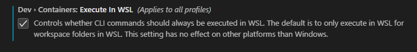

Docker Container for STM32 CMake & Ninja Compiling
-+- TL;DR -+-
This docker image auto clone an online git repo and compile the CMake & Ninja supported STM32 project locally on your computer with mounted volume.
docker run -v "{Local_Full_Path}":"/home" jasonyangee/stm32-builder:ubuntu-latest {Git_Repo_URL}

Example Project
For CMake setup, refer to the below STM32 project template.
https://github.com/jasonyang-ee/STM32-CMAKE-TEMPLATE.git
Dockerfile
Dockerfile: https://github.com/jasonyang-ee/STM32-Dockerfile.git
Public Registry:
ghcr.io/jasonyang-ee/stm32-builder:ubuntu-latest
ghcr.io/jasonyang-ee/stm32-builder:debian-latest
ghcr.io/jasonyang-ee/stm32-builder:alpine-latest
ghcr.io/jasonyang-ee/stm32-builder:arch-latest
jasonyangee/stm32-builder:ubuntu-latest
jasonyangee/stm32-builder:debian-latest
jasonyangee/stm32-builder:alpine-latest
jasonyangee/stm32-builder:arch-latest
Docker Image Compiler Environment
- ARM GNU x86_64-arm-none-eabi
- Ubuntu: build-essential
- Alpine: gcompat & libc6-compat & libstdc++ & g++ & gcc
- git
- cmake
- ninja-build
- stlink-tools
Basics of This Image
This image is intended for building STM32 Microcontroller C/C++ Project Configured with CMake and Ninja.
The entrypoint bash script executes basically two commands:
cmake -DCMAKE_BUILD_TYPE=Release -B /home/build/ -G Ninja
cmake --build /home/build -j 10
CMAKE_TOOLCHAIN_FILEmust be defined in your project CMakeList.txt file.- Default build type is
Release.
Help Menu
Example usage format can be viewed with --help command.
docker run jasonyangee/stm32-builder:ubuntu-latest --help
Use With Git Link
This is intended for testing compile only. It is recommended to Use Hybrid for getting binary files.
Mechanism
Container will clone the supplied git repo into /home and compile it in /home/build.
This process exist in container only. No files will be copied out.
Command
-
Format:
docker run {IMAGE:VERSION} {Git_Repo_URL} docker run {IMAGE:VERSION} {Git_Repo_URL} {Build_Type} -
Example:
docker run --name builder jasonyangee/stm32-builder:ubuntu-latest https://github.com/jasonyang-ee/STM32-CMAKE-TEMPLATE.git docker run --name builder jasonyangee/stm32-builder:ubuntu-latest https://github.com/jasonyang-ee/STM32-CMAKE-TEMPLATE.git Debug
Output
- (Optional) You can copy out the binary files:
docker cp builder:/home/build/{TARGET_NAME}.elf {DEST_PATH} docker cp builder:/home/build/{TARGET_NAME}.bin {DEST_PATH} docker cp builder:/home/build/{TARGET_NAME}.hex {DEST_PATH}
Use With Mount Volume
Mechanism
Container will mount your existing project folder into /home and compile it in /home/build.
-
Local_Project_Full_Pathis the existing project folder path on your local host machine. This folder must contain your source code. -
/homeis the folder in docker container.
Repeating /home folder name as 1st argument is necessary to invoke the auto compile process.
Command
-
Format:
docker run -v "{Local_Project_Full_Path}":"/home" {IMAGE:VERSION} /home docker run -v "{Local_Project_Full_Path}":"/home" {IMAGE:VERSION} /home {Build_Type} -
Example:
docker run -v "F:\Project\STM32-CMAKE-TEMPLATE":"/home" jasonyangee/stm32-builder:ubuntu-latest /home docker run -v "F:\Project\STM32-CMAKE-TEMPLATE":"/home" jasonyangee/stm32-builder:ubuntu-latest /home Debug
Output
Binary Output .bin .elf .hex .map are located in Local_Project_Full_Path/build.
Use Hybrid With Mount Volume + Git Link
Mechanism
Container will mount to local folder. Then it will clone the supplied git repo source file into /home and compile it in /home/build.
Local_Project_Full_Pathis any empty folder path on local host machine. If no folder existed, one will be created.
Command
-
Format:
docker run -v "{Local_Project_Full_Path}":"/home" {IMAGE:VERSION} {Git_Repo_URL} docker run -v "{Local_Project_Full_Path}":"/home" {IMAGE:VERSION} {Git_Repo_URL} {Build_Type} -
Example:
docker run -v "F:\test_compile":"/home" jasonyangee/stm32-builder:ubuntu-latest https://github.com/jasonyang-ee/STM32-CMAKE-TEMPLATE.git docker run -v "F:\test_compile":"/home" jasonyangee/stm32-builder:ubuntu-latest https://github.com/jasonyang-ee/STM32-CMAKE-TEMPLATE.git Debug
Output
Binary Output .bin .elf .hex .map are located in Local_Project_Full_Path/build.
Use Online With Github Action
Mechanism
Using Github Action to load this docker image as base environment. Then run the build script.
Docker image entrypoint 1st argument will define CMake build_type.
How To Use
In the source root, create file .github\workflows\build.yml with the following script.
-
Short Example:
- uses: actions/checkout@v3 - name: BUILD run: build.sh- uses: actions/checkout@v3 - name: BUILD run: build.sh Debug -
Full Script:
name: 'Build with Ubuntu Container' on: push: branches: - 'main' jobs: BUILD and RELEASE: runs-on: ubuntu-latest container: image: 'jasonyangee/stm32-builder:ubuntu-latest' steps: - uses: actions/checkout@v3 - name: BUILD run: build.sh - name: Upload Binary .elf uses: actions/upload-artifact@v2 with: name: BINARY.elf path: ${{ github.workspace }}/build/*.elf - name: Upload Binary .bin uses: actions/upload-artifact@v2 with: name: BINARY.bin path: ${{ github.workspace }}/build/*.bin
Use As Dev Container
Mechanism
In case of team usage, it is possible to distribute a fine tuned docker image to standardize an oranization wide compile environment.
In your project source root, define a .devcontainer/devcontainer.json to configure needed VS Code extensions.
Once reopend in container, you will be operating in this container OS and be able to consistantly compile binary files while using VS Code to continue the development.
How To Use
-
In VS Code, install extensions:
- Dev Containers (ms-vscode-remote.remote-containers)
- Docker (ms-azuretools.vscode-docker)
-
Turn on dev container setting:
Execute In WSL

-
Attach your hardware usb port as describe below in section WSL USB Passthrough.
-
Creat folder
.devcontainerand add the exampledevcontainer.jsonfile in project root. -
Ctrl+Shift+pselectDev Containers: Reopen in Container. -
Build using VS Code Extension or using bash script
build.sh .. -
Flash the device as described in section WSL ST-LINK.

Example
devcontainer.json{ "name": "STM32", "image": "jasonyang-ee/stm32-builder:ubuntu-latest", "privileged": true, "customizations": { "vscode": { "extensions": [ "dan-c-underwood.arm", "jeff-hykin.better-cpp-syntax", "ms-vscode.cpptools", "akiramiyakoda.cppincludeguard", "xaver.clang-format", "twxs.cmake", "ms-vscode.cmake-tools", "adpyke.codesnap", "mcu-debug.debug-tracker-vscode", "marus25.cortex-debug", "ms-vscode-remote.remote-containers", "ms-azuretools.vscode-docker", "cschlosser.doxdocgen", "mhutchie.git-graph", "donjayamanne.githistory", "eamodio.gitlens", "zixuanwang.linkerscript", "bierner.markdown-preview-github-styles", "mcu-debug.memory-view", "mcu-debug.rtos-views", "albert.tabout", "ms-vscode-remote.remote-wsl" ] } } }
Manual Image Usage
-
Docker using volume mount and override ENTRYPOINT to keep interactive mode live
docker run -v "F:\Project\STM32-CMAKE-TEMPLATE":"/home" -it --entrypoint /bin/bash jasonyangee/stm32-builder:ubuntu-latest -
Run build script to invoke auto compiling process.
build.sh /home -
Or optionally, manualy use CMake commands to compile:
cmake -B /home/build -G Ninja cmake --build /home/build
The Windows Subsystem for Linux (WSL)
Follow this guide to setup WSL on Windows Environment.
https://learn.microsoft.com/en-us/windows/wsl/install
WSL USB Passthrough to WSL2
Using Windows machine is difficault to expose USB device to container.
Using WSL maybe the only option for now.
Follow this: https://learn.microsoft.com/en-us/windows/wsl/connect-usb
-
Run cmd (admin mode) on Windows:
winget install --interactive --exact dorssel.usbipd-win wsl --update wsl --shutdown -
Run (restart) WSL Ubuntu:
sudo apt update sudo apt install linux-tools-5.4.0-77-generic hwdata sudo update-alternatives --install /usr/local/bin/usbip usbip /usr/lib/linux-tools/5.4.0-77-generic/usbip 20 -
Run cmd (admin mode) on Windows:
usbipd list

- Note the ST-Link ID and bind it on Windows CMD:
usbipd bind --busid 3-5 usbipd wsl attach --busid 3-5 usbipd wsl list

- Onced a device has been binded, for all future connection, you will only need to attach.
usbipd list usbipd wsl attach --busid 3-5
ST-Link
ST Link Programmer has not yet been automated.
Mechanism
Once completed USB Pass Through, you will be able to use st-link to flash the device.
-
Option 1: Manual image usage with adding
--privilegedinteractive mode live. -
Option 2: Dev Container and use VS Code to excute
st-linkcommands.
How To Use
Tool Details: https://github.com/stlink-org/stlink
-
Confirm Connnection:
st-info --probe -
Manual Flash:
st-flash write {TARGET.bin} 0x8000000 -
Manual Reset:
st-flash reset
Flash Device with Command Line
- Attach USB device into WSL from Windows CMD (Admin).
- Start WSL.
- Check for ST Link Connection.
- Overwrite entrypoint and volume mount an existing project on WSL.
- Invoke docker auto build with the mounted volume.
- Flash STM32
- List of Commands:
usbipd list usbipd wsl attach --busid 3-5 usbipd wsl list wsl cd {WSL_USER_PATH} ls sudo st-info --probe docker run -v {WSL_PROJECT_PATH}:{CONTAINER_PROJECT_PATH} -it --privileged --entrypoint /bin/bash jasonyangee/stm32-builder:ubuntu-latest build.sh {CONTAINER_PROJECT_PATH} st-flash write {PATH_TO_TARGET.BIN} 0x8000000
Flash Device in Dev Container
In project root, create file .vscode/tasks.json with the following script.
.vscode/tasks.json{ "version": "2.0.0", "tasks": [ { "type": "shell", "label": "Linux: Flash Firmware", "command": "st-flash", "args": [ "--reset", "write", "${command:cmake.launchTargetDirectory}/${command:cmake.buildTargetName}.bin", "0x08000000" ], "options": { "cwd": "${workspaceFolder}" }, "problemMatcher": [] }, { "type": "shell", "label": "Linux: Reset Device", "command": "st-flash", "args": [ "reset" ], "options": { "cwd": "${workspaceFolder}" }, "problemMatcher": [] }, ] }
Example

Build This Dockerfile
If you choose to build your own image from Dockerfile.
Manual Build Bash Command Example
-
Format
docker build -t {image_name}:{image_tag} -f Dockerfile.ubuntu . docker build -t {image_name}:{image_tag} -f Dockerfile.alpine . docker build -t {image_name}:{image_tag} -f Dockerfile.arch . docker build -t {image_name}:{image_tag} -f Dockerfile.debian . -
Example
docker build -t jasonyangee/stm32-builder:ubuntu-latest -f Dockerfile.ubuntu .
Auto Build Using VS Code Tasks
Ctrl + Shift + pand enterrun taskand choose the build options:Build Ubuntu.- Modify the build arguments in
.vscode/tasks.jsonif you wish to have different image name.stm32-builder:ubuntu-latest",
User Modifications
Check ARM releases at here:
https://developer.arm.com/downloads/-/arm-gnu-toolchain-downloads/
-
Modify
ARM_VERSION=12.2.rel1for enforcing compiler version. -
If pulling latest version is desired, insert this line before
curlcommand in dockerfile.&& ARM_VERSION=$(curl -s https://developer.arm.com/downloads/-/arm-gnu-toolchain-downloads | grep -Po '<h4>Version \K.+(?=</h4>)') \
Github Action Variables
For those who want to setup your own github action to auto publish variation of this dockerfile to your own docker registry. You may copy my action yml file setup and define the following github variables.
vars.REGISTRY // Github package link (private: "ghcr.io" organization: "ghcr.io/Org_Name")
secrete.DOCKERHUB_TOKEN // Docker Hub login token
secrete.DOCKERHUB_USERNAME // Docker Hub username
secrete.TOKEN_GITHUB_PERSONAL // Github package token
secrete.USER_GITHUB_PERSONAL // Github package username